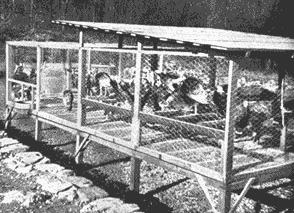

Twelve or thirteen turkeys should have a cage at least 10' by 12' with 12' of feed hoppers running along the outside. Roosts should be built in the sheltered end of the cage, using 2-by-4's with wide side as the roosting surface and allowing 14"" space per bird. Top of roosts should be 20"" from the wire floor and a space of 24"" should separate one roost from another. Allow the birds complete access to the floor under the roosts, otherwise you cut their exercise area to the bone. A slanting roof of very heavy roofing paper and three sides of the same material (removed in above photo) should protect the roosting section.